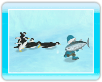

14 |
アイテムを使う |
 |
画面左下のアイテムアイコンをポイントして ※持っているアイテムは、 ダウジング棒 
まめサカナがいる場所を教えてくれる棒です。持ったまま移動すると、まめサカナがいる場所で、ダウジング棒が左右に開きます。 ・まめサカナを釣る 
ダウジング棒が開いたところで たまフグ 
丸い形をしたフグです。持った後もう一度 ・雪玉を作る たまフグを転がすと、雪玉になります。雪玉に近づいて ※雪玉は壁などにぶつかると壊れます。 ※雪玉は同時に3つまで作ることができます。 ペンギンゴールド 
金色のペンギンの像です。持った後 ※置いたペンギンゴールドに近づいて ひかりカツオ ペンギンたちの大好物です。ペンギンは、ひかりカツオを見つけると突進して食べにきます。 |
 |
 |
 |